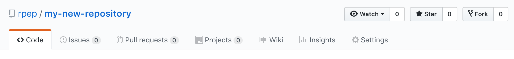

GitHub and Collaborating
Storing your repository somewhere safe
You have a history of your changes locally, but that’s not much good if your hard drive fails. We’ll now show you how keep a history remotely.
Git is known as a ‘distributed version control’ system. Generally, you host a repository somewhere online. There are lots of different providers for this.
 GitHub - free! Now owned by Microsoft. Lots of integrations with other services. Limited number of private repositories, but you gain education status to get an unlimited number.
Probably the widest used, and has best social features because of this.
GitHub - free! Now owned by Microsoft. Lots of integrations with other services. Limited number of private repositories, but you gain education status to get an unlimited number.
Probably the widest used, and has best social features because of this.
GitLab - also free. Unlimited number of private repositories. Also allows local hosting - for e.g. in the University of Southampton, there is a private GitLab instance hosted internally, which can be used for sensitive projects.
 BitBucket - Owners Atlassian have a lot of commercial products that are used in
industry such as JIRA which integrate well with this service.
BitBucket - Owners Atlassian have a lot of commercial products that are used in
industry such as JIRA which integrate well with this service.
For this exercise, we’ll use GitHub, but in practice there is not much between them.
1) Create an account on https://www.github.com
2) Once done, click the “+” arrow in the top right hand corner, and click “New repository”
3) Type in a name and description for your repository:
Don’t touch the other settings yet!
4) You’ll now get a page with a list of commands to type; the ones you want are:
git remote add origin https://github.com/rpep/my-new-repository.git
git push -u origin masterthe other options are used when you have not yet created a repository on your local machine.
When you run ‘git push’, you will be asked for your username and password for GitHub - enter these.
Now refresh the page, and you’ll see the repository you were working on has appeared online!
Collaborating - Partner Up
1) Now - in pairs - each go to the Git repository of your neighbour. This will be
https://github.com/their-username/their-repository-name

Click ‘Fork’. This will make a copy of their repository on your GitHub.
5) Now, copy their repository to your computer with the command:
cd ..
git clone https://github.com/yourusername/their-repository-name.gitYou can only clone a repository like this from GitHub if a folder by the same name doesn’t exist in the directory where you are working. You can get around this via:
git clone https://github.com/yourusername/their-repository-name.git my-alternate-folder-name6) Move into the folder:
cd their-repository-nameAnd make your own change to the file.
7) Commit it as before:
git commit -m "Making a change to my partner's repository"8) Now push the change online:
git push9) Go back to GitHub.
Click “New Pull Request, and then “Create New Pull Request” on the next page.
Add in some information about the changes you made, and then “Create pull request”
10) Now, each of you go back to your own version of the repository, and look at the tab labelled “Pull Requests”
Scroll to the bottom, and then press “Merge pull request”
12) Pull these changes to your repository using ‘git pull’, and your partners changes will now be on your computer as well.
If you choose to make your code public, there are a number of files that are an absolute must have. These are normally written in Markdown format (.md).
A License - A license just describes the terms under which others can use your code. There are many types of Open Source licence, but common ones for academic projects, the GNU GPL and LGPL, MIT, Apache and 3-clause BSD licenses are some common ones.
A README.